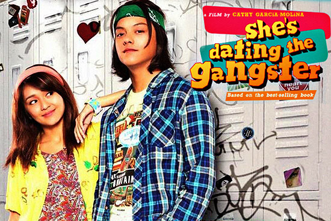

She's Dating A Gangster's is a 2014 Philippine coming-of-age romantic comedy drama film based on the Pop Fiction book of the same name originally published on CandyMag.com's Teen Talk section and it was popularized on Wattpad by Bianca Bernardino. The film is directed by Cathy Garcia-Molina, topbilled by Kathryn Bernardo and Daniel Padilla, together with Dawn Zulueta and Richard Gomez. It was distributed by Star Cinema with co-production of Summit Media and was released on July 16, 2014, in theatres nationwide as part of its 20th anniversary presentation.
In 2014, Kenji Delos Reyes delivers a speech during the wedding of Kirby and Grace. However, Kenneth, Kenji’s son, makes out with a girl in a bathroom stall. The stall opens as the girl’s grandfather enters and chaos then ensues as he chases Kenneth to the reception hall. This causes a scene and a confrontation between Kenji and Kenneth. Kenji then asks Kenneth to be mature and asks him what the problem is, to which the latter says that he doesn’t want to be with him but has no choice. Kenji asks his son what caused him to feel this way, and he answers that he knows about the other Athena. Disappointed, Kenji says that Kenneth has no idea how much he loves him and his mother. The morning after a drinking spree, a hungover Kenneth finds out the plane that would take his father to Bicol has crashed. He rushes to the airport to see the list of survivors. There, he meets Kelay who also wants to see the list. Since the place is crowded, Kelay could not pass through. She then causes a scene so that they would let her see it. She fakes crying and begins shouting that she does not want her father dead. Members of the media approach her and ask what her father’s name is, to which she answers Kenji delos Reyes. Hearing this, Kenneth confronts her and says that he is the only offspring of Kenji. Kenneth then tells the media that he’s the legal son and he can show his birth certificate to prove this. Kelay, on the other hand, has Kenji’s picture. Confirming that the girl on the picture is not his mother, Kenneth is asked by the airline officer for his contact details while Kelay is shunned. Kenneth confronts her to ask who the girl on the picture is, and Kelay bargains that she would tell Kenneth once he agrees to tell her at once when the airline contacts him for information regarding Kenji. However, all the flights to Legazpi are booked. He has no choice but to take the bus but since it's Holy Week, all tickets have been sold. Kenneth sleeps at the bus station, hoping to get a ticket as a chance passenger, yet he oversleeps. Fortunately, Kelay went to the same bus station and bought tickets for the two of them.On the way to Legazpi, Kelay, Athena’s niece, tells the tale of young Athena and Kenji which dates back to 1990s, a "gangster" whom everyone was afraid of. He is broken hearted over Athena Abigail Tizon. Wanting to get back together with her, he mistakenly sends his messages of despair to Athena Dizon’s pager. Athena, not knowing who the messages are from, agrees to meet up with the sender. On a pool hall, Athena and her friend Sarah are keen on playing pool. Kenji arrives and demands that they transfer to another pool table. Athena fights back but Kenji wins and claims his spot. An angry Athena then watches Kenji being bullied by, yet refusing to fight back to, a rival group of gangsters. They tease him that "Bee" would not show up. Hearing this, Athena realizes that the messages were sent by Kenji. She watches with pity as Kenji gets mugged. He finds out about his messages for Abi and confronts Athena. To her surprise, he kisses her forcefully and tells her that from then on, she will be his girlfriend as she owes Kenji for causing him to get mugged. Athena has to pretend to be his girlfriend in order to get Abi jealous. At first, Athena refuses and Kenji bullies her. Athena eventually gives in when Kenji attempts to commit suicide by jumping from the school's rooftop if she does not accept. The next day at school, Athena is treated like a princess with Kenji providing her bodyguards. Jealous, some girls at the school start bullying her. Kenji confronts them and says that no one hurts his girlfriend. Their pretend relationship eventually becomes real and the two confess their love for each other. Kenji takes Athena Dizon to Legazpi to see the Mayon Volcano and promises that someday they will get married in that place with the volcano as their witness. When they come back to Manila, however, Kenji begins to absent himself from class. Athena then gets an invite from young Lucas to go see Kenji who is in the hospital. Worried, Athena hurries and finds Abi lying in the hospital bed. Abi has stage three gastric cancer and was the reason why she broke up with Kenji. Wanting Abi to be happy and live longer, Athena breaks up with him. Kenji and Abi get married and Abi gives birth to Kenneth. Back then 20 years later while searching for Kenji in Legazpi, Kenneth receives a call from present day Lucas and he helps in looking for Kenji. On their way, Kelay receives a call from her family informing her of Athena’s health condition and that she is dying. Kelay and Kenneth part ways with Kenneth promising that Athena and Kenji would meet once he finds him. Kenneth finds the hospital where Kenji is confined and reads his letter to him. In the letter, Kenji tells him that he was on his way to Legazpi to say goodbye to his memories with Athena and apologizes for making Kenneth feel that way. When Kenji wakes up, the two hug and reconcile. When Kenji is well, Kenneth takes him to Athena’s house. Athena tells Kenji about her disease for the first time and tells him that his love kept her alive through those years. She says she is happy for Kenji and dies in his arms. Kelay wakes up to a phone call telling her that a flight has gone missing again and Kenneth was on that flight. When she goes to look for him she makes a scene again, telling the media her 'boyfriend' is missing. Kenneth witnesses Kelay and it's revealed that it was actually Kenji who called her. Kenneth asks Kelay if they can have a great love story like his dad and Kelay's aunt had and almost kiss as the screen cuts to black.
Kenji delos Reyes - male protagonists. Mayaman ng bongga (young master nga ang tawag eh), silent but expresses feelings when he have met Athena. Has a big resemblace with the male lead role in the Taiwanese series Meteor Garden. School famous together with Kirby and Jigs. Has been broken hearted with another Athena - Athena Abigail but has found his one true love in another Athena. Love’s strong and forever. Half Filipino and half Korean too.
Athena Dizon- the female protagonist of the story. Mabait, maganda, mayaman but none of her friends except for Sara know her economic status way back on Korea. Singer, pianist, and dancer (remember the Sexy Love and You got it all part, etc.) Typical schoolgirl (not until he met Kenji) who went to Southville. Died at the end of the story because of HCM, a heart problem.